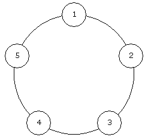

Tehtävät avautuvat kun olet tehnyt kaikki viikkojen 1-6 tehtävät.
Tee ohjelma SuurinSumma.java, joka selvittää suurimman peräkkäisten lukujen summan käyttäjän antamissa luvuissa. Ohjelma kysyy ensin, kuinka monta lukua käyttäjä antaa.
Tässä tehtävässä summaan täytyy kuulua ainakin yksi luku. Voit olettaa, että suurin summa on positiivinen.
Voit olettaa, että käyttäjä antaa ainakin yhden luvun ja korkeintaan miljoona lukua. Lisäksi voit olettaa, että jokainen luku on kokonaisluku väliltä -1000...1000, jolloin kaikki summat mahtuvat int-muuttujiin. Tee ohjelmasta niin tehokas, että se käsittelee miljoona lukua muutamassa sekunnissa.
Huom! Ohjelmasi on oltava tehokas. Aikavaativuuden tulisi olla O(n), missä n on listan pituus. Testit tarkastavat asian.
Vihje! Tehtävään on olemassa ratkaisualgoritmi, jonka aikavaativuus on O(n) ja tilavaativuus on O(1).
Kuinka monta? 5
Anna luvut:
1
-2
5
2
-1
Suurin summa: 7Suurin summa saadaan laskemalla yhteen luvut 5 ja 2.
Kuinka monta? 5
Anna luvut:
4
-2
5
2
-1
Suurin summa: 9Suurin summa saadaan laskemalla yhteen luvut 4, -2, 5 ja 2.
Kuinka monta? 4
Anna luvut:
4
3
-5
6
Suurin summa: 8Suurin summa saadaan laskemalla kaikki luvut yhteen.
Sinulle on annettu taulukko kokonaislukuja ja tehtäväsi on järjestää se pienimmästä suurimpaan. Ainoa sallittu operaatio on kahden vierekkäisen luvun järjestyksen kääntäminen. Kuinka monta kääntöä tarvitset vähintään taulukon järjestämiseksi?
Esimerkiksi jos taulukko on {1, 5, 2, 4, 3}, riittää tehdä 4 kääntöä:
Toteuta metodi:
int laskeKaannot(int[] luvut)
Taulukko luvut sisältää 1..1000 kokonaislukua väliltä 1..109.
Metodin tulee palauttaa pienin kääntöjen määrä, jolla taulukon saa järjestykseen.
| # | metodin kutsu | haluttu palautusarvo |
|---|---|---|
| 1 |
laskeKaannot(new int[] {1, 2, 3, 4, 5})
|
0
|
| 2 |
laskeKaannot(new int[] {5, 1, 2, 3, 4})
|
4
|
| 3 |
laskeKaannot(new int[] {5, 4, 3, 2, 1})
|
10
|
| 4 |
laskeKaannot(new int[] {1, 1, 1, 1, 1})
|
0
|
| 5 |
laskeKaannot(new int[] {1, 5, 2, 4, 3})
|
4
|
Tehtävänä on etsiä reitti pyramidin huipulta alas, jossa joka vaiheessa siirrytään alavasemmalla tai alaoikealla olevaan lukuun ja jossa lukujen summa on mahdollisimman suuri. Voit kuitenkin olettaa, että lukujen lopullinen summa mahtuu int-muuttujaan.
Tarkastellaan seuraavaa lukupyramidia:
4
3 2
1 3 5
3 4 1 1Tässä tapauksessa paras reitti aloittaa huipulta (4), liikkuu alavasemmalle (3), liikkuu alaoikealle (3) ja liikkuu alavasemmalle (4). Lukujen summa reitillä on 14, ja millään muulla reitillä summa ei ole yhtä suuri. Seuraava kuva vastaa reittiä:
4
3 2
1 3 5
3 4 1 1Toisaalta pyramidissa:
4
3 2
1 3 5
3 4 1 10paras reitti olisi:
4
3 2
1 3 5
3 4 1 10
Toteuta tehtäväpohjan ohjelmaan ParasReitti.java metodi public static int parasReitti(int[][] pyramidi), joka etsii parhaan reitin lukupyramidin huipulta alas ja ilmoittaa lukujen summan kyseisellä reitillä.
Metodi saa syötteenä kaksiulotteisen taulukon pyramidi siten, että pyramidi[i][j] on pyramidin (ylhäältä laskien, nollasta lähtien) i:nnen rivin (vasemmalta laskien, nollasta lähtien) j:nnes numero.
Ohjelma voi olettaa, että pyramidissa on korkeintaan sata kerrosta. Tällöinkin ohjelman toiminnan tulee olla tehokas. Aikavaativuuden tulee olla kutakuinkin O(n^2), missä n on pyramidin korkeus.
Vihje! Tässä tehtävässä saattaa olla iloa ohjelmontitekniikasta nimeltä dynaaminen ohjelmointi (dynamic programming).
Anna koko: 4
Anna luvut:
4
3 2
1 3 5
3 4 1 1
Paras: 14Anna koko: 5
Anna luvut:
7
2 9
1 5 2
3 1 4 2
7 8 3 1 4
Paras: 30Tarkastellaan peliä, jossa joukko henkilöitä on asettunut rinkiin. Pelissä henkilöitä käydään läpi myötäpäivään ja joka toinen henkilö joutuu poistumaan ringistä. Ensimmäinen poistuja on toisena oleva. Lopulta ringissä on jäljellä enää yksi henkilö, josta tulee pelin voittaja.
Esimerkiksi jos henkilöitä on viisi, tilanne on seuraavanlainen:
Henkilöt käydään läpi seuraavasti:
Pelin voittaja on henkilö 3, joka jää rinkiin viimeisenä.
Toteuta ohjelmaan Viimeinen metodi:
int viimeinen(int montako), joka selvittää yllä kuvatun pelin voittajan, kun pelissä on annettu määrä henkilöitä.
Huom! Suunnittele ohjelma niin, että se on tehokas myös miljoonan henkilön tapauksessa. Ratkaisun tulee olla O(1) ja O(n log n) välillä.
Kuinka monta? 5
Voittaja: 3Kuinka monta? 6
Voittaja: 5Tehtäväsi on toteuttaa tehtävän 2 metodi tehokkaasti.
Toteuta metodi:
long laskeKaannot(int[] luvut)
Taulukko luvut sisältää 1..105 kokonaislukua väliltä 1..109.
Huomaathan että vastaus voi olla niin suuri, ettei se mahdu int -muuttujaan. Käytä siis longeja!
Vinkki: lomitusjärjestäminen.